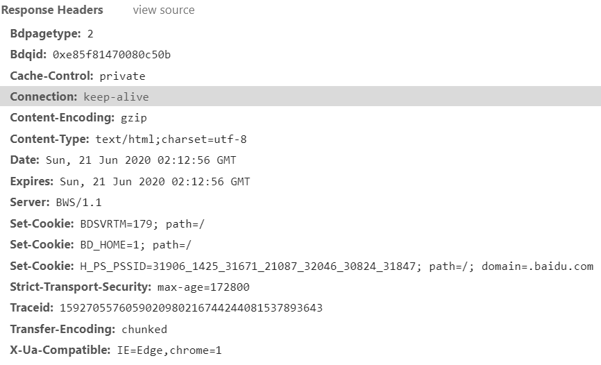
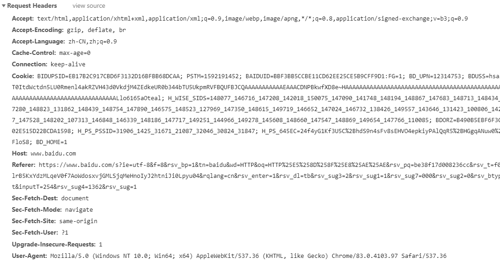
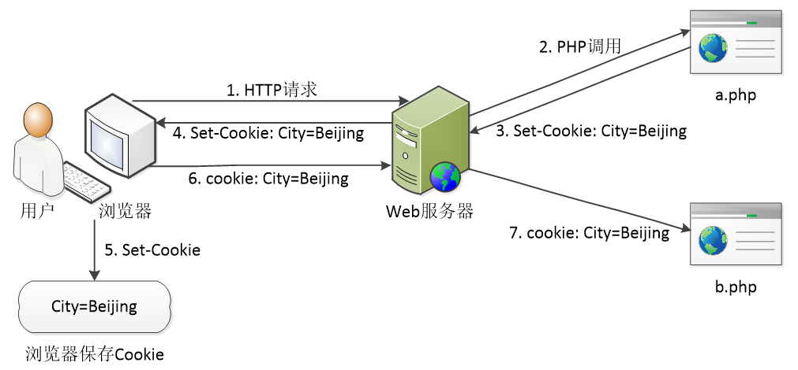
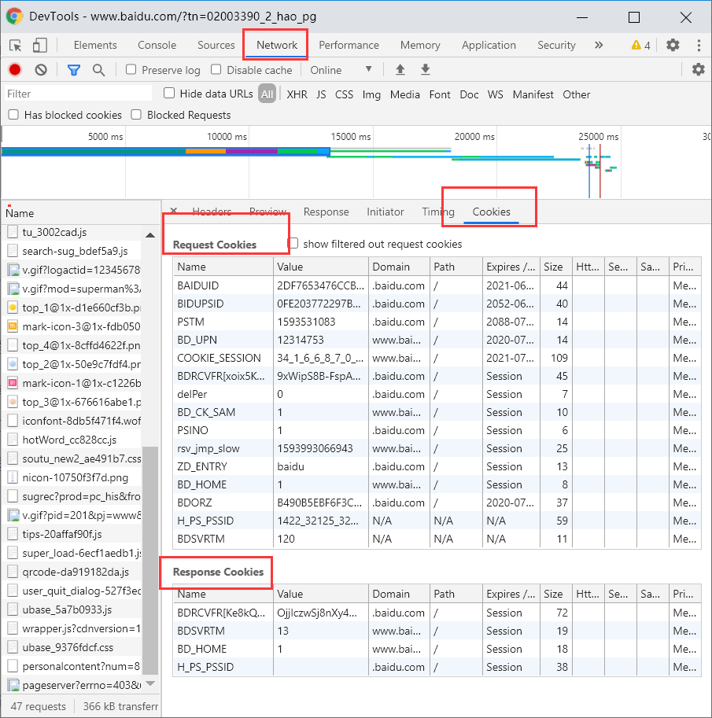
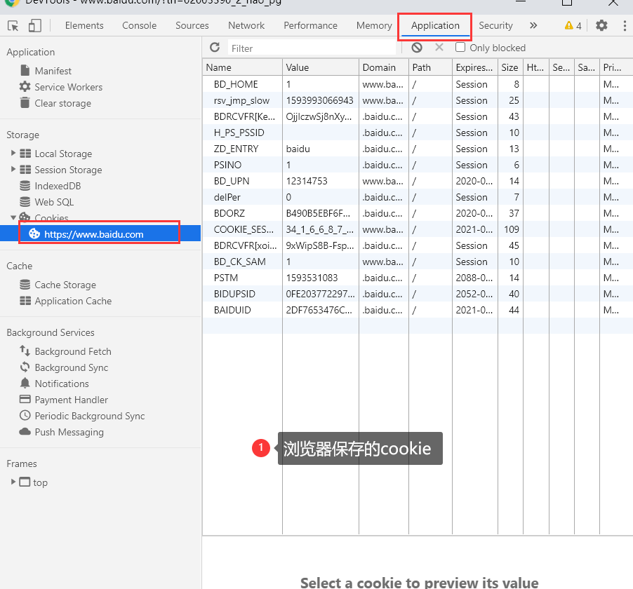
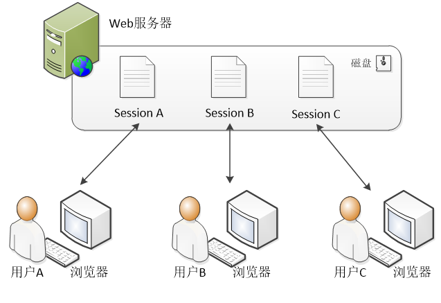
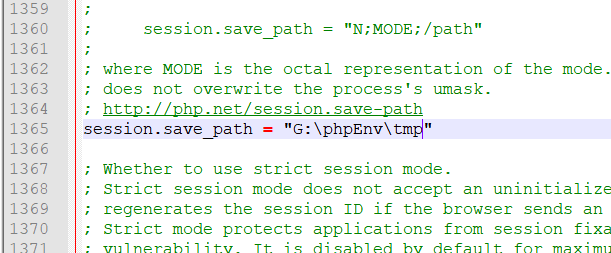

title: php入门笔记3
tags:
Hyper Text Transfer Protocol（超文本传输协议）的缩写,是用于从万维网（WWW:World Wide Web ）服务器传输超文本到本地浏览器的传送协议。
HTTP是一种基于请求与响应式的协议，即浏览器发送请求，服务器做出响应。在交互过程中，请求消息与响应消息统称为HTTP消息。
请求网址（Request URL）
请求方法（Request Method）
状态码（Status Code）
IP地址（Remote Address）
响应头（Response Headers）：是服务器返回的信息
请求头（Request Headers）：是发送本次请求时的浏览器的信息
GET
POST
PHP接收到浏览器端的请求，会将相关信息保存在
$_SERVER超全局变量数组中,我们通过该数组就可以获得请求消息
<pre>
var_dump($_SERVER)
</pre>| 消息头 | 说明 |
|---|---|
| Location | 控制浏览器显示哪个页面 |
| Server | 服务器的类型 |
| Content-Type | 服务器发送内容的类型和编码类型 |
| Last-Modified | 服务器最后一次修改的时间 |
| Date | 响应网站的时间 |
//设定编码格式
header('Content-Type:text/html;charset=utf-8');
//响应404消息
header('HTTP/1.1 404 Not Found');
//页面重定向
header('Location: login.php');HTTP协议是一种通信协议，除了浏览器，其他软件也可以通过HTTP协议与服务器交换信息。虽然PHP运行于服务器端，但有时服务器也需要向另一台服务器请求数据，这时可以通过PHP来实现。
file_get_contents()
file_get_contents()函数用于从一个文件中读取内容，返回字符串。该函数既可以读取本地文件，也可以读取远程地址文件。
//请求远程地址
$html = file_get_contents('http://www.test.com');
//获取响应消息头
var_dump($http_response_header);
//输出返回信息
echo '<hr>'.htmlspecialchars($html);
$http_response_header变量是PHP的内置变量，用于自动保存响应消息。
cURL扩展
PHP中提供的cURL扩展可以高效地进行远程请求。在使用cURL扩展前应确保php.ini中已经开启了cURL扩展。
//初始化一个cURL会话
$ch = curl_init();
//设置请求选项，包括具体的URL
curl_setopt($ch, CURLOPT_URL, 'http://www.itcast.cn');
//设定返回的信息中包含响应消息头
curl_setopt($ch, CURLOPT_HEADER, 1);
//设定curl_exec()函数将结果返回，而不是直接输出
curl_setopt($ch, CURLOPT_RETURNTRANSFER, 1);
//执行一个cURL会话
$html = curl_exec($ch);
//释放cURL句柄，关闭一个cURL会话
curl_close($ch);
//输出返回信息
echo htmlspecialchars($html);当用户通过浏览器访问网站时，通常情况下，服务器需要对用户的状态进行跟踪。例如，当用户通过用户名和密码进行登录时，如果登录成功，服务器应该记住该用户的登录状态。
在Web开发中，服务器跟踪用户信息的技术称为会话技术。
Cookie是网站为了辨别用户身份而存储在用户本地终端上的数据。因为HTTP协议是无状态的，即服务器不知道用户上一次做了什么，这严重阻碍了交互式Web应用程序的实现。
Cookie就是解决HTTP无状态性的一种技术，服务器可以设置或读取Cookie中包含的信息，借此可以跟踪用户与服务器之间的会话状态，通常应用于保存浏览历史、保存购物车商品和保存用户登录状态等场景。
在PHP中，使用setcookie()函数可以创建或修改Cookie。
bool setcookie (
string $name //Cookie名称
string $value = '', //Cookie值
int $expire = 0, //有效期（时间戳）
string $path = '', //有效路径（默认为当前目录和子目录有效）
string $domain = '', //有效域名（可允许二级域名下访问Cookie）
bool $secure = false , //是否只允许HTTPS安全连接访问
bool $httponly = false //是否只允许HTTP访问（可阻止JavaScript访问Cookie）
)参数$name是必需的，其他参数都是可选的
setcookie('city', '北京市'); //未指定过期时间，在会话结束时过期
setcookie('city', '北京市', time()+1800); //半小时后过期
setcookie('city', '北京市', time()+60*60*24); //一天后过期
setcookie('city', '', time()-1); //立即过期（删除COOKIE）对于浏览器发送的Cookie数据，在PHP中可以使用超全局数组变量
$_COOKIE来接收。
//判断Cookie中是否存在city数据
if(isset($_COOKIE['city'])){
$city = $_COOKIE['city']; //从COOKIE中获取City数据
}else{
//Cookie中的city不存在
//在这可以设置cookie
}
$city=isset($_COOKIE['city'])?$_COOKIE['city']:'';需要注意的是，当PHP第一次通过setcookie()创建Cookie时，
$_COOKIE中没有这个数据；只有当浏览器下次请求并携带Cookie时，才能通过$_COOKIE获取到相关信息。
当服务器端PHP通过setcookie()向浏览器端响应Cookie后，浏览器就会保存Cookie，在下次请求时会自动携带Cookie。
对于普通用户来说，Cookie是不可见的，但Web开发者可以通过“F12”开发者工具查看Cookie。在开发者工具中切换到【Network】-【Cookies】。
 Session在网络应用中称为“会话”，指的是用户在浏览某个网站时，从进入网站到关闭网站所经过的这段时间。
Session技术是一种服务器端的技术，它的生命周期从用户访问页面开始，直到断开与网站的连接时结束。Session通常用于保存用户登录状态、保存生成的验证码等。
当PHP启动Session时，服务器会为每个用户的浏览器创建一个供其独享的Session文件。
Session文件的保存目录是php.ini中的配置项“session.save_path”指定的，其默认路径位于“C:\Windows\Temp”，打开这个目录可以查看Session文件：

$_SESSION添加、读取或修改Session中的数据。session_start(); //开启SESSION
$_SESSION['username'] = '小明'; //向SESSION添加数据（字符串）
$_SESSION['info'] = [1, 2, 3]; //向SESSION添加数据（数组）
if(isset($_SESSION['test'])){ //判断SESSION中是否存在test
$test = $_SESSION['test']; //读取SESSION中的test
}
unset($_SESSION['username']); //删除单个数据
$_SESSION = []; //删除所有数据
session_destroy(); //结束当前会话使用“
$_SESSION= []”方式可以删除Session中的所有数据，但是Session文件仍然存在，只不过它是一个空文件。
如果需要将这个空文件删除，可以通过session_destroy()函数来实现。
在PHP中，输出缓冲（Output Buffer）是一种缓存机制，它通过内存预先保存PHP脚本的输出内容，当缓存的数据量达到设定的大小时，再将数据传输到浏览器。
输出缓冲机制解决了当有实体内容输出后，再使用header()、setcookie()、session_start()等函数无法设置HTTP消息头的问题，因为消息头必须在实体内容之前被发送，通过输出缓冲，可以使实体内容延缓到HTTP消息头的后面被发送。
输出缓冲在PHP中是默认开启的。
在php.ini中，它的配置项为“output_buffering = 4096”，表示输出缓冲的内存空间为4KB。
通过PHP的ob函数可以控制输出缓冲，常用函数如下：
| 函数名 | 作用 |
|---|---|
| ob_start() | 启动输出缓冲 |
| ob_get_contents() | 返回当前输出缓冲区的内容 |
| ob_end_flush() | 向浏览器发送输出缓冲区的内容，并禁用输出缓冲 |
| ob_end_clean() | 清空输出缓冲区的内容，不进行发送，并禁用输出缓冲 |
| ob_start() | 启动输出缓冲 |
要想完成文件上传，在设计表单时需要满足以下两个需求：
<form method="post" enctype="multipart/form-data">
<input type="file" name="upload" />
<input type="submit" value="上传" />
</form>默认情况下，该元素只能上传一个文件。当需要上传多个文件时，可以编写多个标签，或者为一个标签添加multiple属性。
PHP默认将通过HTTP上传的文件保存到服务器的临时目录下，该临时文件的保存期为脚本的周期，即PHP脚本执行期间。
在处理上传文件时，通过sleep(seconds)函数延迟PHP文件执行的时间，可以在系统临时目录“C:\Windows\Temp”中查看临时文件。
在PHP释放上传文件之前，在PHP脚本中可以用超全局变量$_FILES来获取上传文件的信息。
该变量的外层数组保存上传文件的“name”属性名，内层数组保存的是该上传文件的具体信息
//假设PHP收到来自<input type="file" name="upload" />上传的文件
echo $_FILES['upload']['name']; //上传文件名称，如photo.jpg
echo $_FILES['upload']['size']; //上传文件大小，如879394（单位是Byte）
echo $_FILES['upload']['error']; //上传是否有误，如0（表示成功）
echo $_FILES['upload']['type']; //上传文件的MIME类型，如image/jpeg
echo $_FILES['upload']['tmp_name']; //上传后临时文件名，如C:\Windows\Temp\php9BA5.tmp$_FILES数组中的 error 有 7 个值，分别为 0、1、2、3、4、6、7。
0 表示上传成功
1 表示文件大小超过了php.ini中upload_max_filesize选项限制的值
2 表示文件大小超过了表单中max_file_size选项指定的值
3 表示文件只有部分被上传
4 表示没有文件被上传
6 表示找不到临时文件夹
7 表示文件写入失败
//判断是否有“name=upload”的文件上传，是否上传成功
if(isset($_FILES['upload']) && $_FILES['upload']['error']==0){
//上传成功，将文件保存到当前目录下的“uploads”目录中
if(move_uploaded_file($_FILES['upload']['tmp_name'], './uploads')){
echo '文件上传成功';
}
}需要注意的是，移动文件的目标路径“./uploads”必须是已经存在的目录，否则会移动失败。
文件类型主要分为文件和目录，PHP可以通过filetype()函数来获取文件类型。
echo filetype('./uploads/1.jpg'); //输出结果：file
echo filetype('./uploads'); //输出结果：dir在操作一个文件时，如果该文件不存在，会发生错误。为了避免这种情况发生，可以通过file_exits()、is_file()和is_dir()函数，来检查文件或目录是否存在。
var_dump( file_exists('./uploads/1.jpg') ); //文件存在，输出：bool(true)
var_dump( file_exists('./uploads/2.jpg') ); //文件不存在，输出：bool(false)
var_dump( is_file('./uploads/1.jpg') ); //输出结果：bool(true)
var_dump( is_dir('./uploads') ); //输出结果：bool(true)| 函数 | 功能 |
|---|---|
| int filesize(string $filename ) | 获取文件大小 |
| int filectime(string $filename) | 获取文件的创建时间 |
| int filemtime(string $filename) | 获取文件的修改时间 |
| int fileatime(string $filename) | 获取文件的上次访问时间 |
| bool is_readable(string $filename) | 判断给定文件是否可读 |
| bool is_writable(string $filename) | 判断给定文件是否可写 |
| bool is_executable(string $filename) | 判断给定文件是否可执行 |
| array stat(string $filename) | 给出文件的信息 |
由于PHP中int数据类型表示的数据范围有限，所以filesize()函数对于大于2GB的文件，并不能准确获取其大小，需斟酌使用。
在程序开发过程中，经常需要对文件进行复制、删除以及重命名等操作。针对这些功能，PHP提供了相应的函数
| 函数 | 功能 |
|---|---|
| bool copy(string $source, string $dest) | 用于实现拷贝文件的功能 |
| bool unlink(string $filename) | 用于删除文件 |
| bool rename(string $old_name, string $new_name) | 用于实现文件或目录的重命名功能 |
在PHP中，对于文件的读写提供了许多函数。其中，基于文件的句柄的函数可以对大文件进行流式读写操作；而对于小文件，直接进行读写效率更高。
| 函数 | 功能 |
|---|---|
| resource fopen(string $filename, string $mode) | 打开文件，获取文件句柄 |
| bool fclose(resource $handle) | 关闭文件句柄 |
| string fread(resource $handle, int $length) | 通过句柄读取文件，获取指定长度字符串 |
| int fwrite(resource $handle, string $string [,int $length]) | 通过句柄写入文件 |
| string fgetc(resource $handle) | 通过句柄读取文件，每次读取一个字节。 |
| string fgets(resource $handle [,int $length]) | 通过句柄读取文件，每次读取一行内容 |
| array file(string $filename) | 将文件读取到按行分割的数组中 |
| string file_get_contents(string $filename) | 读取文件 |
| int file_put_contents(string $filename, mixed $data) | 写入文件 |
//定义下载文件名
$name = 'download.zip';
//获取文件大小
$size = filesize('./data.zip');
//设置HTTP响应消息为文件下载
header('content-type:octet-stream');
header('content-length:'.$size);
header('content-disposition:attachment;filename="'.$name.'"');
$fp = fopen('./data.zip', 'r'); //以只读方式打开文件
//读取文件并输出
$buffer = 1024; //读取缓冲
$count = 0; //已读取的大小
while(!feof($fp) && ($size - $count > 0)){//判断文件是否全部读取
echo fread($fp, $buffer);
$count += $buffer;
}
//关闭文件，停止脚本
fclose($fp);exit;在进行文件操作时，经常需要创建目录。通过mkdir()函数可以实现目录的创建。
mkdir('./path'); //在当前目录下创建一个path目录
mkdir('./path1/path2', 0777, true); //在当前目录下递归创建path1/path2目录在程序中经常需要对文件路径进行解析操作，如路径中的文件名和目录等。PHP提供了一些函数实现目录的解析操作。
| 函数 | 功能 |
|---|---|
| string basename(string $path [, string $suffix ]) | 返回路径中的文件名 |
| string dirname(string $path) | 返回路径中的目录部分 |
| mixed pathinfo(string $path [, int $options ]) | 以数组的形式返回路径信息，包括目录名、文件名等 |
需要注意的是，在处理带有中文的路径时，应注意操作系统对于文件路径的编码问题。只有PHP程序设置的编码与操作系统的编码统一，才能正确处理中文路径。
在程序中经常需要对某个目录下的子目录或文件进行遍历。为此，PHP中内置了相应的函数用于实现目录或文件的遍历。
| 函数 | 功能 |
|---|---|
| resource opendir(string $path) | 打开一个目录句柄 |
| string readdir(resource $dir_handle) | 从目录句柄中读取条目 |
| void closedir(resource $dir_handle) | 关闭目录句柄 |
| void rewinddir(resource $dir_handle) | 倒回目录句柄 |
| array glob(string $pattern [, int $flags = 0 ]) | 寻找与模式匹配的文件路径 |
function getDirSize($path){
$size = 0; //保存文件大小
$handle = opendir($path); //打开目录句柄
while($name = readdir($handle)){
if($name!='.' && $name !='..'){
$file = "$path/$name";
$size += is_dir($file) ? getDirSize($file) : filesize($file);
}
}
closedir($handle);
return $size;
}
echo '当前目录大小：'.getDirSize('./').'B';GD库是PHP处理图像的扩展库，它提供了一系列用来处理图像的函数，可以实现缩略图、验证码和图片水印等操作。
但由于不同的GD库版本支持的图像格式不完全一样，因此，从PHP的4.3版本开始，PHP捆绑了其开发团队实现的GD2库。它不仅支持GIF、JPEG、PNG等格式的图像文件，还支持FreeType、Type1等字体库。
在处理图像前，需要先创建图像资源。PHP有多种创建图像的方式，可以基于一个已有的文件创建，也可以直接创建一个空白画布。
| 函数 | 功能 |
|---|---|
| resource imagecreate(int $width, int $height) | 创建指定宽高的空白画布图像 |
| resource imagecreatetruecolor (int $width, int $height ) | 创建指定宽高的真彩色空白画布图像 |
| resource imagecreatefromgif(string $filename) | 从给定的文件路径创建GIF格式的图像 |
| resource imagecreatefromjpeg(string $filename) | 从给定的文件路径创建JPEG格式的图像 |
| resource imagecreatefrompng(string $filename) | 从给定的文件路径创建PNG格式的图像 |
在使用PHP创建空白画布的时候，并不能直接给画布指定颜色。为画布填充颜色时，可以通过imagecolorallocate()函数来完成。
//创建空白画布资源
$im = imagecreate(200,100);
//填充颜色（参数依次为：图像资源、红色数值、绿色数值，蓝色数值）
imagecolorallocate($im, 100, 110, 204);imagecolorallocate()函数用于为画布填充颜色，该函数的第2~4个参数分别表示RGB中的三种颜色。
在完成图像资源的处理后，可以将图像输出到网页中，或者保存到文件中。
//创建空白画布并填充颜色
$im = imagecreate(200, 100);
imagecolorallocate($im, 100, 110, 204);
//设置HTTP响应消息，将文档类型设置为GIF图片
header('Content-Type: image/gif');
//将图像资源以GIF格式输出
imagegif($im); //该函数第2个参数指定图像保存路径，省略时直接输出到网页在在输出时应通过header()函数告知浏览器接下来发送的数据是一张GIF格式的图片，否则浏览器不会以图片的形式展现内容。
在PHP中，绘制文本通常用于开发验证码、文字水印等功能。通过imagettftext()函数可以将文字写入到图像中，该函数的参数说明如下。
array imagettftext(
resource $image, //图像资源（通过imagecreate()创建）
float $size, //文字大小（字号）
float $angel, //文字倾斜角度
int $x, //绘制位置的x坐标
int $y, //绘制位置的y坐标
int $color, //文字颜色（通过imagecolorallocate()创建）
string $fontfile, //文字字体文件（即.ttf字体文件的保存路径）
string $text //文字内容
);在使用imagettftext()函数时，需要给定字体文件，可以使用Windows系统中安装的字体文件（在C:\Windows\Fonts目录中），也可以通过网络获取其它字体文件放在项目目录下使用。
图形的构成无论多么复杂，都离不开最基本的点、线、面。在PHP中，GD库提供很多绘制基本图形的函数，通过这些函数可以绘制像素点、线条、矩形、图形等。
| 函数 | 功能 |
|---|---|
| imagesetpixel(resource $image, int $x, int $y, int $color) | 绘制一个点，其中参数$x和$y用于指定该点的坐标，$color用于指定颜色 |
| imageline(resource $image, int $x1, int $y1, int $x2, int $y2, int $color) | 用$color颜色在图像$image中从坐标（x1,y1）到（x2,y2）绘制一条线条 |
| imagerectangle(resource $image, int $x1, int $y1, int $x2, int $y2, int $color) | 用$color颜色在$image图像中绘制一个矩形，其左上角坐标为（x1，y1），右下角坐标为（x2，y2） |
| imageellipse(resource $image, int $cx, int $cy, int $w, int $h, int $color) | 在$image图像中绘制一个以坐标（cx，cy）为中心的椭圆。其中，$w和$h分别指定了椭圆的宽度和高度，如果$w和$h相等，则为正圆。成功时返回true，失败则返回false。 |
| imagesetpixel(resource $image, int $x, int $y, int $color) | 绘制一个点，其中参数$x和$y用于指定该点的坐标，$color用于指定颜色 |
//创建画布、填充颜色、创建颜色
$im = imagecreate(200, 100); //创建200*100大小的画布
imagecolorallocate($im, 255, 255, 255); //为画布填充白色
$color = imagecolorallocate($im, 50, 50, 50); //创建黑色
//绘制矩形
imagerectangle($im, 10, 10, 180, 90, $color);
//绘制文本（使用Windows自带的黑体字体）
imagettftext($im, 20, 0, 65, 60, $color, 'C:/Windows/Fonts/simhei.ttf', '矩形');
//输出图像
header('Content-Type: image/png');
imagepng($im); 在创建图像资源时，除了创建空白画布，还可以基于图片文件进行创建。当需要对图片进行缩放、叠加时，可以通过imagecopyresampled()函数来完成。
bool imagecopyresampled(
resource $dst_image, //目标图像资源
resource $src_image, //原图像资源
int $dst_x, //目标的x坐标
int $dst_y, //目标的y坐标
int $src_x, //原图的x坐标
int $src_y, //原图的y坐标
int $dst_w, //目标图像的宽
int $dst_h, //目标图像的高
int $src_w, //原图像的宽
int $src_h //原图像的高
)//定义基本变量
$source = './1.jpg'; //原图路径
$dst_w = 200; //目标宽度
$dst_h = 100; 目标高度
list($src_w, $src_h) = getimagesize($source); //获取原图宽高
$src_im = imagecreatefromjpeg($source); //创建原图资源
$dst_im = imagecreatetruecolor($dst_w, $dst_h); //创建目标图像画布资源
//将原图缩放到目标图像中
imagecopyresampled($dst_im, $src_im, 0, 0, 0, 0, $dst_w, $dst_h, $src_w, $src_h);
//保存到文件中（参数依次为图像资源、保存路径、JPEG压缩质量0~100）
imagejpeg($dst_im, './thumb_1.jpg', 100);
//定义基本变量
$source = './1.jpg'; //原图路径
$target = './2.jpg'; //目标图路径
list($src_w, $src_h) = getimagesize($source); //获取原图的宽高
//创建图像资源
$src_image = imagecreatefromjpeg($source);
$dst_image = imagecreatefromjpeg($target);
//将原图叠加到目标图中
imagecopyresampled($dst_image, $src_image, 0, 0, 0, 0, $src_w, $src_h, $src_w, $src_h);
header('Content-Type: image/jpeg');
imagejpeg($dst_image);
在函数中定义的局部变量，在函数执行完成后，就会被自动释放。当不希望函数中的局部变量被释放时，可以使用静态变量。
在实际开发中，函数执行完成后自动释放局部变量有利于节省内存空间，而静态变量会一直占用内存空间，因此在使用静态变量时一定要酌情考虑
function test(){
static $a = 1; / /声明静态变量，并赋值1
return ++$a; //静态变量$a自增1，然后返回
}
echo test(); //输出结果：2
echo test(); //输出结果：3在变量赋值的时候，有传值赋值和引用赋值两种形式。同样，在函数进行参数传递时，也可以进行引用传参。
在编写函数时，在参数的前面加上“&”引用符号即可。
function test(&$a){
++$a;
}
$num = 1;
test($num); //调用函数，引用传参
echo $num; //输出结果：23、可变参数
在PHP中，函数参数的数量可以是不固定的，可以通过func_get_args()获取调用时传递的所有参数，这些参数以数组的形式保存。
function test(){
$params = func_get_args(); //获取调用时传递的参数，返回数组类型
return implode('-', $params);
}
echo test(123, 456); //输出结果：123-456因此，在PHP中，函数的参数数量可以是不固定的
值得一提的是，在调用函数时，还可以使用call_user_func_array()函数以数组的形式传递参数。
function test($a, $b){
return $a + $b;
}
echo call_user_func_array('test', [123, 456]); //输出结果：579